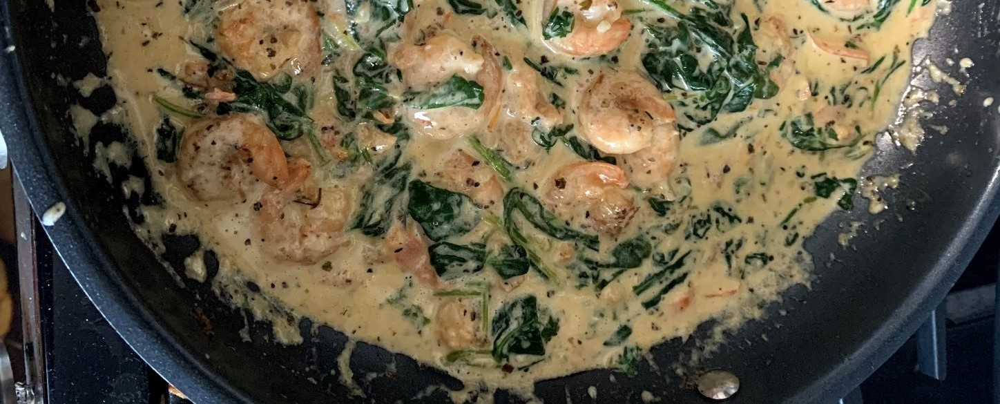

Creamy Shrimp

Ingredients
- Olive Oil
- Butter
- Shrimp
- Salt
- Pepper
- Garlic Cloves
- Spinach
- Heavy Cream
- Parmesan
- Fresh Basil
Nutrition Information
| Amount per serving |
1 serving |
| Calories |
422 |
| Total Fat |
33g |
| Saturated Fat |
16g |
| Total Cholesterol |
367mg |
| Sodium |
1066mg |
| Total Carbohydrates |
5g |
| Fiber |
1g |
| Sugar |
1g |
| Protein |
28g |
Instructions
- Heat oil and butter in a large skillet.
- Add shrimp once butter has melted and oil is hot.
- Add salt and pepper and sautee.
- Remove shrimp once done.
- Add garlic, tomatoes, and spinach into the large skillet and sautee.
- Add the heavy cream, parmesan, and basil.
- Return shrimp into the skillet.
- Stir to combine.